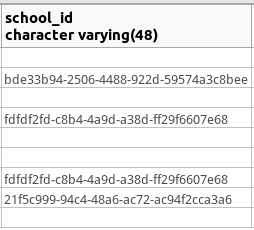
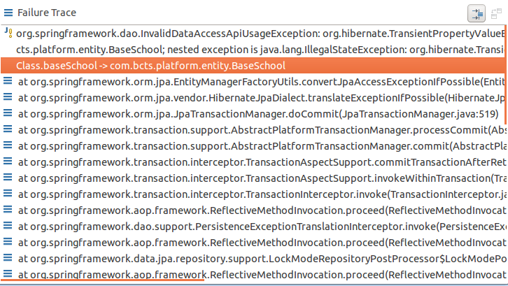

1.什么是外键？
- 简介：如果公共关键字在一个关系中是
主关键字，那么这个公共关键字被称为另一个关系的外键。由此可见，外键表示了两个关系之间的相关联系。以另一个关系的外键作主关键字的表被称为主表，具有此外键的表被称为主表的从表。外键又称作外关键字。 - 作用：保持数据一致性，完整性，主要目的是控制存储在外键表中的数据。 使两张表形成关联，外键只能引用外表中的列的值或使用空值。
2.数据库表实例
- 班级表

- 学校表

- 其中班级表的
school_id为外键，学校表的uid为主键。
3.实体类代码表示
BaseClass类的BaseSchool属性
1 @ManyToOne(fetch=FetchType.LAZY)
2 @JoinColumn(name="school_id", referencedColumnName="uid")
3 private BaseSchool baseSchool;BaseSchool类中不需要写BaseClass类相关的代码。在数据库中，BaseClass表只需要储存BaseSchool的主键即可，需要时Hibernate可使用主键级联取出。

4.测试
使用JUnit4进行单元测试
- 非主键测试
测试结果： 
不能保存没有主键的BaseSchool对象
- 添加主键测试
1 @Test
2 public void testCascade2(){
3 BaseClass baseClass = new BaseClass();
4 baseClass.setUidAuto();
5 baseClass.setClassName("TestCascade");
6 baseClass.setClassId("1000");
7 BaseSchool baseSchool =new BaseSchool();
8 baseSchool.setUid("21f5c999-94c4-48a6-ac72-ac94f2cca3a6");
9 baseClass.setBaseSchool(baseSchool);
10 System.out.println(baseClass.getBaseSchool().toString());
11 baseClassRepository.save(baseClass);
12 }测试结果：

添加逐渐后测试成功！